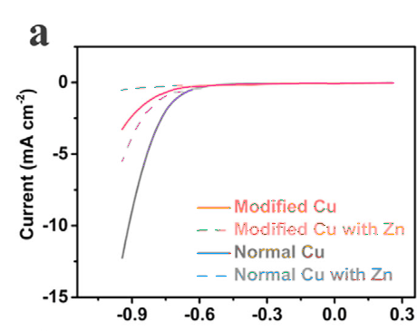
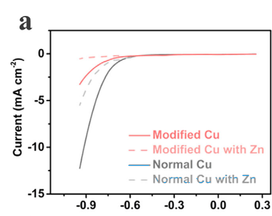
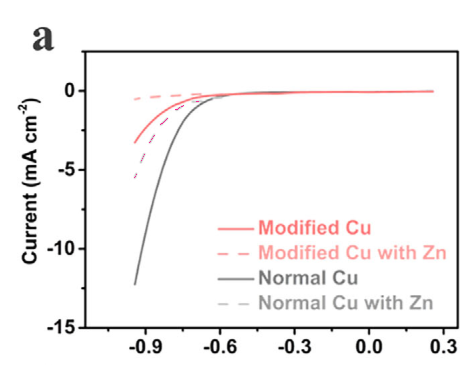

Candidate paths only, not accepted scientific measurements. Every point is a source pixel; no gap interpolation or smoothing.
Review candidates: 5



| ID | Status | Style | Points | Segments | X coverage |
|---|---|---|---|---|---|
| TR01 | CANDIDATE_REVIEW | SOLID_WITH_OCCLUSION_CANDIDATE | 298 | 3 | 0.8091 |
| TR02 | CANDIDATE_REVIEW | DISCONTINUOUS_UNRESOLVED | 116 | 22 | 0.5753 |
| TR03 | CANDIDATE_REVIEW | DISCONTINUOUS_UNRESOLVED | 123 | 34 | 0.6156 |
| TR04 | CANDIDATE_REVIEW | DISCONTINUOUS_UNRESOLVED | 92 | 31 | 0.6129 |
| TR05 | REJECTED_WEAK_PATH | DASHED_CANDIDATE | 51 | 4 | 0.1452 |
| TR06 | CANDIDATE_REVIEW | DISCONTINUOUS_UNRESOLVED | 73 | 27 | 0.4839 |
| TR07 | REJECTED_WEAK_PATH | DASHED_CANDIDATE | 37 | 4 | 0.1667 |
| TR08 | REJECTED_WEAK_PATH | DISCONTINUOUS_UNRESOLVED | 40 | 21 | 0.3253 |
| TR09 | REJECTED_WEAK_PATH | DASHED_CANDIDATE | 32 | 7 | 0.1747 |
| TR10 | REJECTED_WEAK_PATH | DISCONTINUOUS_UNRESOLVED | 24 | 2 | 0.0887 |
| TR11 | REJECTED_WEAK_PATH | DISCONTINUOUS_UNRESOLVED | 25 | 15 | 0.2339 |
| TR12 | REJECTED_WEAK_PATH | DISCONTINUOUS_UNRESOLVED | 18 | 10 | 0.121 |